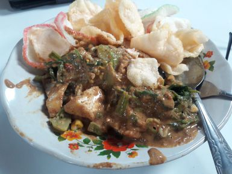

|
|
Cara Membuat Gado-Gado
- Semua sayuran dan telur direbus matang.
- Bumbu dihaluskan dan ditumis dengan sedikit minyak sampai harum, ditambahkan daun jeruk dan serai lalu air dimasukkan dan terakhir santan.
- sayuran yang sudah matang ditata di atas piring dan ditambahkan potongan telur, krupuk dan emping, lalu disirami bumbu.
Bahan
- Bayam
- Kentang
- Kacang panjang/Buncis
- Kol
- Tauge
- Wortel
- Telur
- Timun (tidak usah direbus)
- Krupuk
- 3 lembar daun jeruk
- 2 batang serai
- 200ml air
- 400ml santan
Bumbu Halus
- 250gr kacang tanah (goreng/roasted)
- 4 siung bawang merah (1 buah bawang bombay)
- 2 siung bawang putih
- 150gr gula Jawa (palm sugar)
- 3sdm kecap manis
- garam
- gula
|

Video on Youtube
|